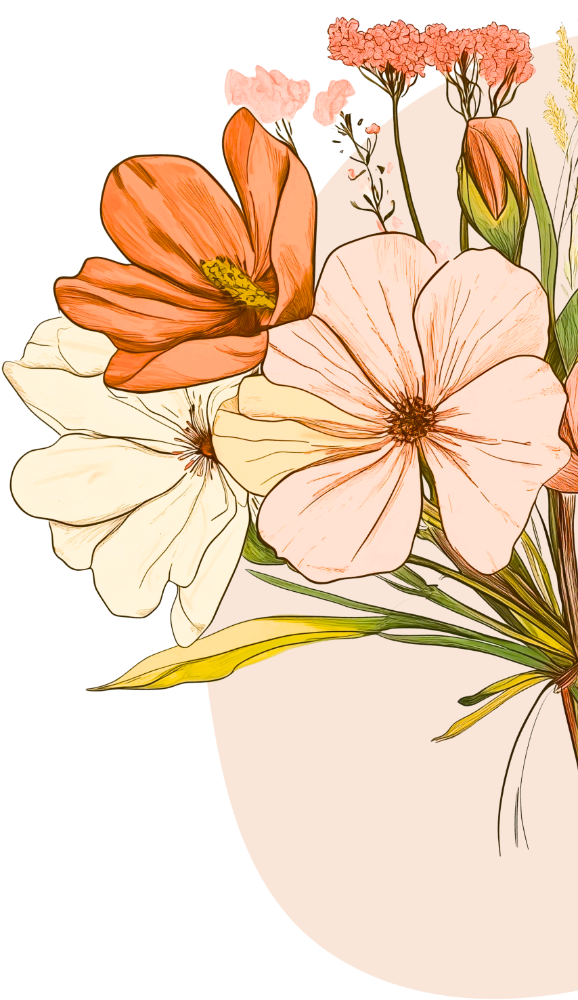
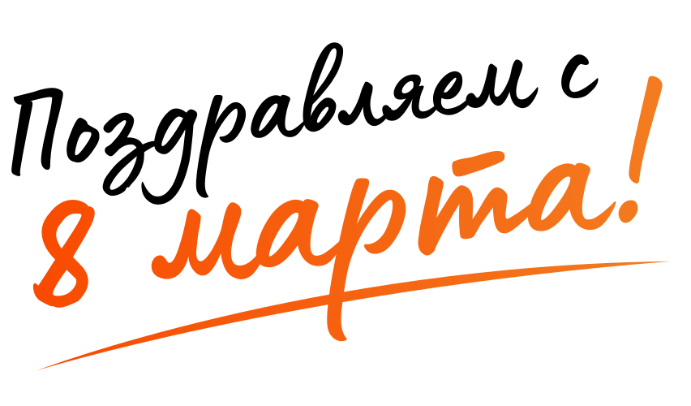
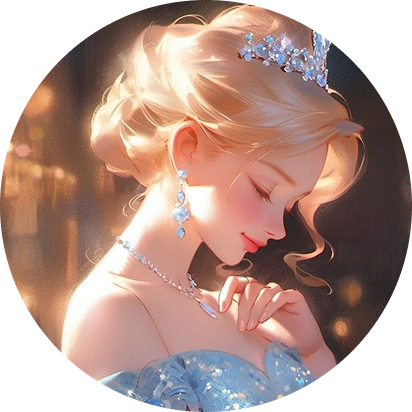
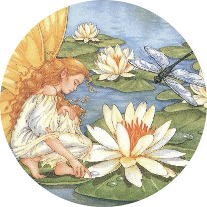
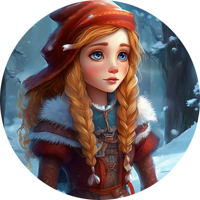
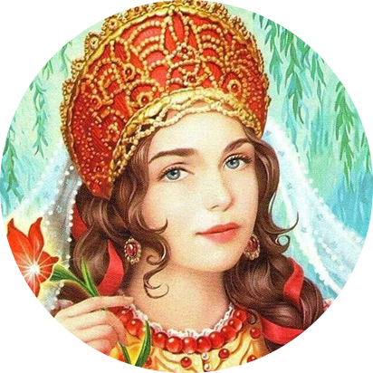

Узнать результат

Результат
Вы — Золушка
Максим Шлегель просил не упоминать эту героиню, потому что она
была фактически крепостной, но давайте честно: Золушка –
отзывчивая, трудолюбивая и верит в лучшее. Хороший пример для
подражания. Как и ты. Все делаешь вовремя и четко, умеешь
выглядеть эффектно и с тобой всегда спокойно.

Результат
Вы — Дюймовочка
С одной стороны, ты умеешь идти на уступки, с другой, знаешь
себе цену. Но тем с тобой интереснее. А как нас восхищает твой
характер: ты добрая, внимательная, очень милая, а в моменты
дедлайнов тебе действительно достаточно ползернышка, ведь
работа не ждет!
Результат
Вы — Снегурочка
В русских сказках у Снегурочки всегда трагичная судьба, но для
нас ты та Снегурочка, которая выступает одним из символов
Нового года. Ты – человек-праздник, с которым так приятно
видеться хоть каждый день, и даже после долгой разлуки встречи
с тобой – как со старым другом. В работе ты тоже незаменимый
человек, который никогда не откажет в помощи.

Результат
Вы — Герда, «Снежная королева»
Обычно это за мужчиной, как за каменной стеной, но для нас
такая стена – ты. Ты преодолеешь все препятствия, договоришься
с кем угодно, но обязательно выручишь в трудную минуту. Наши
сердца просто тают, а руки сами собой собирают из последних
льдинок этой зимы сразу три слова «вечность», «любим», «тебя».

Результат
Вы — Настенька, «Аленький цветочек»
Неважно, какую должность занимает человек и какую одежду он
носит. Ты ценишь в людях то, что у них внутри, и это подкупает
нас больше всего. А еще у тебя действительно все получается,
как по волшебству, и в нашем королевстве не обойтись без
человека, который умеет немножко колдовать.